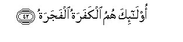

Sacred Texts Islam Index
Hypertext Qur'an Unicode Palmer Pickthall Yusuf Ali English Rodwell
Sūra LXXX.: ’Abasa, or He Frowned. Index
Previous Next

The Holy Quran, tr. by Yusuf Ali, [1934], at sacred-texts.com
Sūra LXXX.: ’Abasa, or He Frowned.
Section 1
1. (The Prophet) frowned
And turned away,
2. Because there came to him
The blind man (interrupting).
3. Wama yudreeka laAAallahu yazzakka
3. But what could tell thee
But that perchance he might
Grow (in spiritual understanding)?—
4. Aw yaththakkaru fatanfaAAahu alththikra
4. Or that he might receive
Admonition, and the teaching
Might profit him?
5. As to one who regards
Himself as self-sufficient,
6. To him dost thou attend;
7. Wama AAalayka alla yazzakka
7. Though it is no blame
To thee if he grow not
(In spiritual understanding).
8. But as to him who came
To thee striving earnestly,
9. And with fear
(In his heart),
10. Of him wast thou unmindful.
11. By no means
(Should it be so)!
For it is indeed
A Message of instruction:
12. Therefore let whoso will,
Keep it in remembrance.
13. (It is) in Books
Held (greatly) in honour,
14. Exalted (in dignity),
Kept pure and holy,
15. (Written) by the hands
Of scribes—
16. Honourable and
Pious and Just.
17. Qutila al-insanu ma akfarahu
17. Woe to man!
What hath made him
Reject God:
18. Min ayyi shay-in khalaqahu
18. From what stuff
Hath He created him?
19. Min nutfatin khalaqahu faqaddarahu
19. From a sperm-drop:
He hath created him, and then
Mouldeth him in due proportions;
20. Thumma alssabeela yassarahu
20. Then doth He make
His path smooth for him;
21. Then He causeth him to die,
And putteth him in his Grave;
22. Thumma itha shaa ansharahu
22. Then, when it is
His Will, He will
Raise him up (again).
23. Kalla lamma yaqdi ma amarahu
23. By no means hath he
Fulfilled what God
Hath commanded him.
24. Falyanthuri al-insanu ila taAAamihi
24. Then let man look
At his Food,
(And how We provide it):
25. For that We pour forth
Water in abundance,
26. Thumma shaqaqna al-arda shaqqan
26. And We split the earth
In fragments,
27. And produce therein Corn,
28. And Grapes and nutritious Plants,
29. And Olives and Dates,
30. And enclosed Gardens,
Dense with lofty trees,
31. And Fruits and Fodder,—
32. MataAAan lakum wali-anAAamikum
32. For use and convenience
To you and your cattle.
33. Fa-itha jaati alssakhkhatu
33. At length, when there
Comes the Deafening Noise,—
34. Yawma yafirru almaro min akheehi
34. That Day shall a man
Flee from his own brother,
35. And from his mother
And his father,
36. And from his wife
And his children.
37. Likulli imri-in minhum yawma-ithin sha/nun yughneehi
37. Each one of them,
That Day, will have
Enough concern (of his own)
To make him indifferent
To the others,
38. Wujoohun yawma-ithin musfiratun
38. Some Faces that Day
Will be beaming,
39. Laughing, rejoicing.
40. Wawujoohun yawma-ithin AAalayha ghabaratun
40. And other faces that Day
Will be dust-stained;
41. Blackness will cover them:

42. Ola-ika humu alkafaratu alfajaratu
42. Such will be
The Rejecters of God,
The Doers of Iniquity.